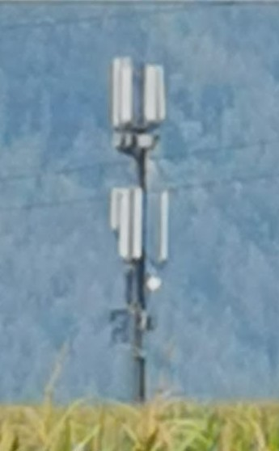

Aktuell haben wir einen Magenta Kabel Anschluss mit 250/50Mbit. Aufgrund eines Umzugs und dem Umstand, dass das Magentakabelnetz an dem neuen Standort nicht verfügbar ist, muss ich mich nach einer Alternative bzgl. des Internet Anschlusses umsehen. lt. Magenta 5G Verfügbarkeitscheck und Tarifcheck wäre sogar 5G inkl. passendem 250/25Mbit verfügbar - ich würde sogar in Betracht ziehen - vorausgesetzt die Geschwindigkeit werden erreicht - auf den 5G 500/50 Tarif zu erhöhen. (Man soll ja den neuen Technologien auch mal eine Chance geben...)
Auf
https://www.senderkataster.at/
sind zwar einige Mobilfunkmasten eingezeichnet, aber keiner der Masten in der Nähe hat 5G als Technologie vermerkt.
Der RTR-Netztest vermag in der Umgebung ebenfalls noch keine 5G Resultate aufzuzeigen. Das kann natürlich daran liegen, dass noch keiner einen 5G Test gemacht hat oder das 5G Netz in diesem Bereich schlichtweg noch nicht ausgebaut ist - widersprüchlich zu den Angaben des Verfügbarkeitschecks.
Gibt es bei Magenta eine Möglichkeit zu erfahren, wie es mit der 5G Verfügbarkeit an diesem Ort WIRKLICH aussieht? (außer den Support anzurufen - welcher hier auch keine gezielte Auskunft geben konnte - und mehr ein "generelle" Aussage getroffen hat).
Weiters würde mich noch interessieren, wie es bei den 5G Tarifen mit der dem Zugriff "nach Hause" aussieht? Hat man eine ipv4 Adresse zur Verfügung oder ist man hier ge-NATed? Wenn sich hinter einem NATing verbirgt - kann man hier einen direkten Zugriff bekommen? Geht mir hier eigentlich nur um die Smart-Home Steuerung, welche direkt angesprochen werden kann (und mir die liebere Variante gegenüber diverser "Cloud"-Lösungen ist.)
Ist Magenta hier die richtige Wahl - oder muss man sich bei der Konkurrenz (eigentlich nur A1 (brrrr..) / Kabelsignal auch nicht verfügbar) umsehen?
Danke vielmals schon jetzt für konstruktives Feedback,
LG
P.S.: ja - ich weiß das 5G über die "Luft" geht - und somit auch ein Shared Medium ist.
Cool - vielen Dank für den Link - kannte ich noch nicht
Sieht ja mal nicht so schlecht aus - die erste Abfrage hat ergeben:
Anfrage habe ich einmal gestellt - schauen wir einmal, was hier für Angebote zurück kommen.
vielen Dank.
Bearbeitet
von Ronar85
Rexalius2000
Gerne, du gehörst zu den Glücklichen die VPLUS nutzen können. Die maximale erreichbare Geschwindigkeit diese du an deinem Standort erreichst findest du unter dem Punkt: Diese Technologien und Maximalbandbreiten sind über das Wählamt "xxx" verfügbar .
Solltest du auch TV benötigen, gib Bescheid
Monatsentgelte Magenta Internet Fix:
Internet Fix 20 (Internet 20 + Digital Telefon) € 23,00
Internet Fix 30 (Internet 30 + Digital Telefon) € 24,00
Internet Fix 40 (Internet 40 + Digital Telefon) € 25,00
Internet Youth Fix 50 (Internet 50 + Digital Telefon) € 26,00
Internet Fix 75 (Internet 75 + Digital Telefon) € 30,00
Internet Fix 150 (Internet 150 + Digital Telefon) € 40,00
Internet Youth Fix 150 (Internet 150 + Digital Telefon) € 39,00
Mindestvertragsdauer (MVD): 12 Monate – sofern im Rahmen einer Aktion keine anderslautende MVD gesondert vereinbart wurde.
Christian_E
DSL wäre in diesem Fall klar zu bevorzugen. Da hat man eine ziemlich stabile Verbindung.
Im Mobilfunk, wenn 5G noch nicht vorhanden ist, ist ja auch LTE noch eine Alternative aber gerade in Zeiten wie diesen, ist das shared Medium nicht mehr die erste Wahl, weil es regional hoffnungslos überlastet ist.
Insofern - irgendwie - wenn möglich auf Kabel/Kupfer ausweichen.
Nosfreddy
Ich bin in Sollenau, nicht weit entfernt. Hab immer wieder mal die Netzabdeckungskarte gecheckt und nach Verfügbarkeit dann vor einer Woche auf 5G umgestiegen. Hab denn 500Mbit/s Tarif und hatte von Anfang an immer zw. 400 und 480 Mbit/s. Vorher den LTE-Vertag. Ich hab 5G einfach mal die Chance gegeben und wurde nicht enttäuscht. Und diese Geschwindigkeit hab ich selbstverständlich indoor, zumindest im gleichen Raum.
Bei 2 Teenager die online spielen war das quasi ein Muß.
Christian_E
Na das sind mal erfreuliche Nachrichten.
Aber der Sender dürfte bei dir nicht weit entfernt sein oder?
Nosfreddy
Um ehrlich zu sein, ich bin mir nicht sicher an welchem Sender ich häng. Der den ich vermute wär 800 m entfernt.
Die Downloadrate von ca. 450 - 480 Mbit ist auch relativ stabil unabhängig der Tageszeit. Hoffe das bleibt auch so.
Der Upload liegt aber meist eher so zw. 30 und 40 Mbit, aber wer braucht den schon.
Bezügl. der Entferung im Wlan-Netz, falls das wem interessiert. Ein Raum weiter u. 1 Stockwerk tiefer mit 1 Fritz-Repeater dazwischen hab ich dann noch etwa 100 Mbit Download.
Latenz liegt meist zwischen 9 und 14 ms
Nosfreddy
Kleiner Nachtrag. Hab jetzt auf dieser Senderkarte nachgeguckt.
Es gibt noch einen näheren Masten, der wär 650 entfernt und viel Feld und nur wenig Häuser dazwischen.
Vielleicht ja deshalb? Müsste ich mal testen, wenn ich den Router an das entsprechende Fenster stelle.
Christian_E
800 oder 600 Meter sind in jedem Fall ideal. Also da bist du gut versorgt und damit erklärt sich deine Performance.
Ich denke da sind bei dir auch alle Striche beim Router zu sehen oder?
Nosfreddy
Kann ich erst später sagen, bin hier in der Arbeit mit grad mal 25 Mbit. :D.
Reich ich später noch nach.
Christian_E
Kein Problem.
Ping sieht bei dir auch super aus.
Vielleicht kannst uns noch schreiben, welcher Router bei dir im Einsatz ist:
Aber kein Stress.
Danke!
Nosfreddy
Ja alle Balken voll.
Huawei H122-373, falls dir das was sagt. Steht zumindest unten dran.
Wie gesaggt, einzig der Upload war die ersten Tage besser. Da war er bei ca. 42 Mbit, Jetzt ist er bei 32 Mbit wie einbetoniert.
Christian_E
Danke für die Info.
Empfang also auch 1a bei dir. Dann viel Spaß. Du gehörst definitiv zu den glücklichen, wo aktuell offenbar alles super läuft. 🙂
Rexalius2000
Bin gespannt, wann bei mir 5G(NSA) verfügbar ist. Hoffe das es die 5G Daten Tarife dann als SIM Only gibt. Der Masten von Magenta steht bei mir nur 300 Meter entfernt.
Christian_E
Na da brauchst sicher keine extra Antenne mehr. Sieht bei mir nicht so rosig aus.
Aber ich lass mich mal überraschen, was die Zukunft bringt.
Nosfreddy
Ja bin auch happy und froh, dass es so gut läuft. Vorher hatte ich LTE. War das schon nicht schlecht. Download zw. 50-70 mit Ausreisser nach oben und unten.
Rexalius2000
Eventuell macht der Hügel Probleme und ich muss doch auf eine Antenne zurückgreifen. Aber am liebsten wäre mir FTTH
Christian_E
Kann ja alles noch werden.
Wenn man der Politik zuhört, soll ja alles bald ganz fein in Österreich werden. Ehrlich - mir fehlt der Glauben dazu
Aber spannend bei dir - wie sieht da die Topographie bei dir aus?
Meine Antenne ist auf einen Sender in 8km Entfernung ausgerichtet. RSRP bei 93db... Und das ohne Sichtkontakt...
Rexalius2000
Ich glaube es auch nicht. Vor ca. 2 Jahren wurden ca.50 Meter von meinem Haus entfernt Glasfaser von A1 verlegt diese bis heute noch nicht im Betrieb sind. Es war auch mal die Rede davon, dass Magenta Kabel in unseren Ort kommt aber da war wohl die Nachfrage zu gering. Ich habe auch nur einen Sichtkontakt zum Sender, wenn ich am Dach stehe aufgrund des Hügels vor meinem Haus. Die Mobilfunkstadion von Magenta (siehe Foto) sendet auf den LTE Bänder 1,3 und 20 nur versorgt diese Anlage 3 Ortschaften mit ca. 10000 Einwohner was sich natürlich dann peformancemässig zur Primetime zeigt. Schon 4 Kilometer weiter ist 5G(NSA) vorhanden. T-Mobile/Magenta waren die ersten bei uns im Ort die UMTS/LTE angeboten haben. Die Gemeinde hat auch Magenta Pool Verträge für Ihrer Mitarbeiter/innen. Daher stehen die Chancen nicht schlecht das bald 5G(NSA) kommt. Hoffentlich
.

Christian_E
Kannst du am Dach eine Antenne montieren. Das wäre ja nahezu perfekt bei dir...
Rexalius2000
vor 1 Stunde schrieb Christian_E:
Kannst du am Dach eine Antenne montieren. Das wäre ja nahezu perfekt bei dir...
Ja, das könnte ich.
Christian_E
Na dann. Perfekt
Dann hast sicher spitzen Empfangs Werte.
Also von dem her, kann dich nur mehr die Auslastung drosseln. 😁
Rexalius2000
Auch zu Ostern am Wochenende sehr gute Werte mit 5G(NR).
Christian_E
Bei mir nicht.
Mit LTE zwar brauchbar aber das Betz erscheint deutlich ausgelastet. Aber klar - Samstag Nachmittag, da sind viele daheim im Internet.

{kind=link}
{kind=link}
{kind=link}
{kind=link}